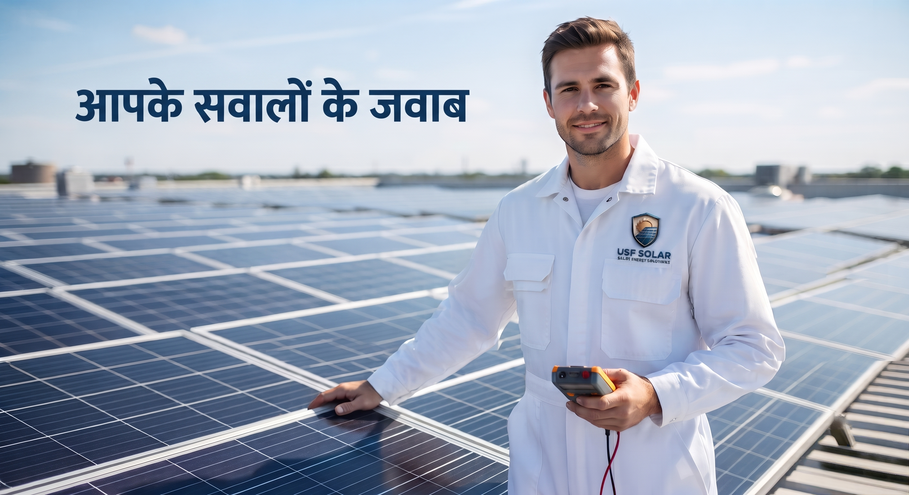

Clean Energy • Bright Future

आपका सवाल, हमारा आसान जवाब!
सोलर पैनल सूरज की रोशनी को बिजली में बदलता है। इससे घर और व्यवसाय की बिजली जरूरत पूरी करने में मदद मिलती है।
औसतन 1 किलोवाट सिस्टम से प्रतिदिन लगभग 4 से 5 यूनिट बिजली बन सकती है। वास्तविक उत्पादन मौसम और छत की दिशा पर निर्भर करता है।
लगभग 80 से 100 वर्ग फुट जगह प्रति किलोवाट की जरूरत हो सकती है।
बिल कम हो सकता है, लेकिन फिक्स्ड चार्ज और अन्य शुल्क लागू रह सकते हैं।
घरेलू उपभोक्ताओं को पात्रता और सरकारी नियमों के अनुसार PM Surya Ghar योजना में सब्सिडी मिल सकती है।
योजना के मौजूदा नियमों के अनुसार पहले 2 किलोवाट पर ₹30,000 प्रति किलोवाट तक केंद्रीय सब्सिडी का प्रावधान है। पात्रता और स्वीकृति जरूरी है।
पात्र घरेलू उपभोक्ता को केंद्रीय सहायता के रूप में ₹60,000 तक मिल सकते हैं।
पात्र घरेलू उपभोक्ता के लिए केंद्रीय सब्सिडी अधिकतम ₹78,000 तक हो सकती है।
सामान्य ऑन-ग्रिड सिस्टम सुरक्षा के कारण बिजली जाने पर बंद हो जाता है। बैकअप के लिए हाइब्रिड सिस्टम या बैटरी की जरूरत होती है।
यह सिस्टम बिजली ग्रिड से जुड़ा होता है और नेट मीटरिंग के जरिए बिजली का हिसाब किया जाता है।
हाइब्रिड सिस्टम में बैटरी बैकअप की सुविधा हो सकती है।
अच्छे सोलर पैनल आमतौर पर 25 साल या उससे अधिक चल सकते हैं। वारंटी की शर्तें अलग हो सकती हैं।
हाँ, लेकिन बादल और बारिश के समय बिजली उत्पादन कम हो जाता है।
धूल और गंदगी हटाने के लिए समय-समय पर साफ करना जरूरी है।
हाँ, USF SOLAR स्ट्रक्चर, पैनल फिटिंग और इलेक्ट्रिकल इंस्टॉलेशन का काम करता है।
उपलब्धता के अनुसार Waaree और Adani सहित अलग-अलग क्षमता के पैनल के विकल्प मिल सकते हैं।
TOPCon एक आधुनिक सोलर सेल तकनीक है, जो अच्छी दक्षता प्रदान कर सकती है।
DCR का मतलब Domestic Content Requirement है। कुछ सरकारी योजनाओं में निर्धारित DCR पैनल जरूरी होते हैं।
ऑन-ग्रिड सिस्टम में नेट मीटरिंग की प्रक्रिया DISCOM के नियमों के अनुसार होती है।
साइट, सिस्टम क्षमता और अनुमति के अनुसार इंस्टॉलेशन में समय अलग-अलग हो सकता है।
हाँ, लेकिन पहले छत की मजबूती और स्ट्रक्चर की जांच जरूरी है।
पैनल का वजन उसके मॉडल और क्षमता पर निर्भर करता है। सही वजन के लिए निर्माता की डेटाशीट देखें।
कुछ बैंक और वित्तीय संस्थान पात्र ग्राहकों को सोलर लोन देते हैं।
हाँ, सफाई और समय-समय पर इलेक्ट्रिकल जांच जरूरी है।
USF SOLAR की 5 साल मुफ्त सर्विस की पेशकश लागू लिखित शर्तों और सेवा समझौते के अनुसार होगी।
आमतौर पर बिजली बिल, उपभोक्ता विवरण, पहचान और बैंक संबंधी दस्तावेज मांगे जा सकते हैं।
हाँ, जरूरत और जगह के अनुसार व्यावसायिक सोलर सिस्टम लगाया जा सकता है।
हाँ, सर्दियों में भी सोलर पैनल बिजली बनाता है। उत्पादन धूप पर निर्भर करता है।
कीमत पैनल, इन्वर्टर, स्ट्रक्चर, क्षमता और इंस्टॉलेशन के अनुसार तय होती है।
नीचे दिए WhatsApp बटन से सीधे संपर्क कर सकते हैं।
सोलर से जुड़ी जानकारी और इंस्टॉलेशन के लिए संपर्क करें।
📞 7487865366
WhatsApp पर संपर्क करें